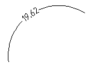

Команда: draw_arc_demention
Команда: draw_arc_dementionВычисляет расстояние между двумя точками и подписывает на дуге.
Полезно при большой загружености промерами небольшого участка плана.
Команда: draw_arc_demention
 Укажи первую точку измеряемой линии<Выход>:
Укажи первую точку измеряемой линии<Выход>:
 указывает начальную точку дуги и измеряемой линии
указывает начальную точку дуги и измеряемой линии
Укажи вторую точку измеряемой линии:
указывает конечную точку дуги и измеряемой линии
Укажи куда положить подпись:
указывает точку вставки измереного расстояния или пустой ввод если требуется линия и отрисовка рассояния в середине этой линии.
Пример результата работы кнопки
